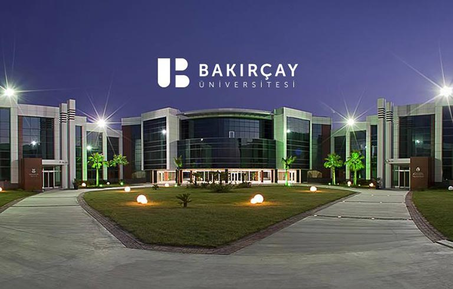

MIS Student
Welcome to my Website, I'm Şamil. I was born in Bursa. I grew up in Sakarya. I'm in my 3rd year as a MIS undergraduate at Izmir Bakırçay University. Currently, I'm learning Web Development, and I quite enjoy doing it thanks to my professor Mr. Fares Dael. I enjoy following the technology and learning new skills. With work experience in various jobs, I can easily say I'm good with all kinds of people and get along with them. My ex-business partners, bosses, and clients love me, and I'm sure you will have a great experience with me as they do.
I couldn't find my group projects due to the fact that our professors were allowing only one person in the group to upload them to the system, and I wasn't the person who uploaded them. I requested them from my project friends, but I didn't get any of them. It's not an excuse I'm responsible as well but one time I had to reset my laptop and I thought they were saved in the cloud after doing the reset I realised they weren't. Unfortunately, thats the case.
Email: 211005047@bakircay.edu.tr
GitHub: github.com/studentaccount35
LinkedIn: linkedin.com/in/furkan-şamil-deliballi-b12a45278
Phone Number: +905432156789
Izmir Bakırçay Üniversitesi
